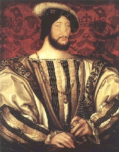

François Ier (1515-1547) incarne la Renaissance française. Vainqueur à Marignan dès la première année de son règne, mécène des arts, constructeur de châteaux, il affirme le pouvoir royal tout en affrontant Charles Quint. Sur le plan monétaire, son règne voit une activité soutenue des ateliers de Paris, Lyon, Toulouse, Rouen et d'autres villes.
Les espèces caractéristiques comprennent le double tournois, les testons à l'effigie du roi (inspirés des modèles italiens), et diverses monnaies de billon. La qualité artistique des gravures progresse nettement. Le portrait royal s'impose sur l'argent, marquant une étape importante dans l'évolution de l'iconographie monétaire française.
Ces monnaies ouvrent le parcours de la collection présentée sur ce site : de la Renaissance à l'euro, cinq siècles d'Histoire de France racontés par le métal.
Sources : catalogues Ciani, Duplessy, Dy · infonumis.info
Les monnaies du règne de François Ier
'" />Double tournois à la croisette, 1er type
Date: 19/3/1541 ; Atelier : M (Toulouse) ; 59.760 exemplaires
Point secret : annelet au 5e (avers et revers)
Billon ; 17 mm ; 0.98g (théorique 1.245g)
Avers : + FRANCISCVS: D: G: F: REX (Mm), (S rétrogrades) (François, par la grâce de Dieu, roi des Francs) ; Trois lis posés 2 et 1.
Revers : + SIT: NOMEN: DNI: BENED (Mm), (S rétrograde) (Béni soit le nom du Seigneur) ; Croix pleine alésée, dans un double quadrilobe annelé ; lettre d'atelier sous la croix.
Références : C.1184 Dy.935 L.791 Sb.4268